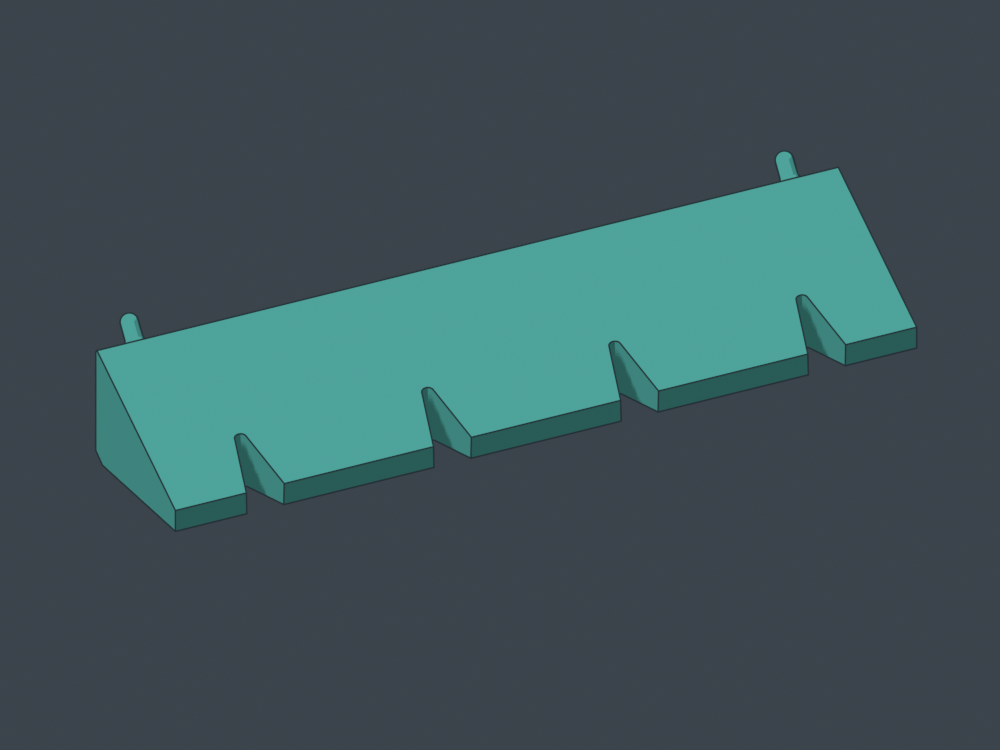
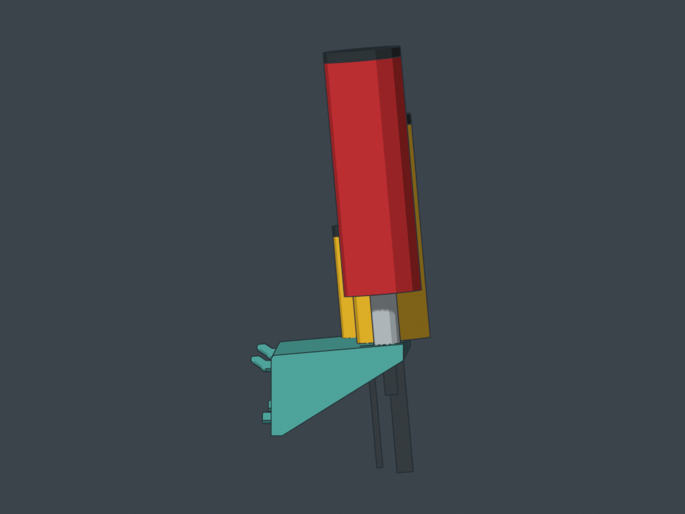
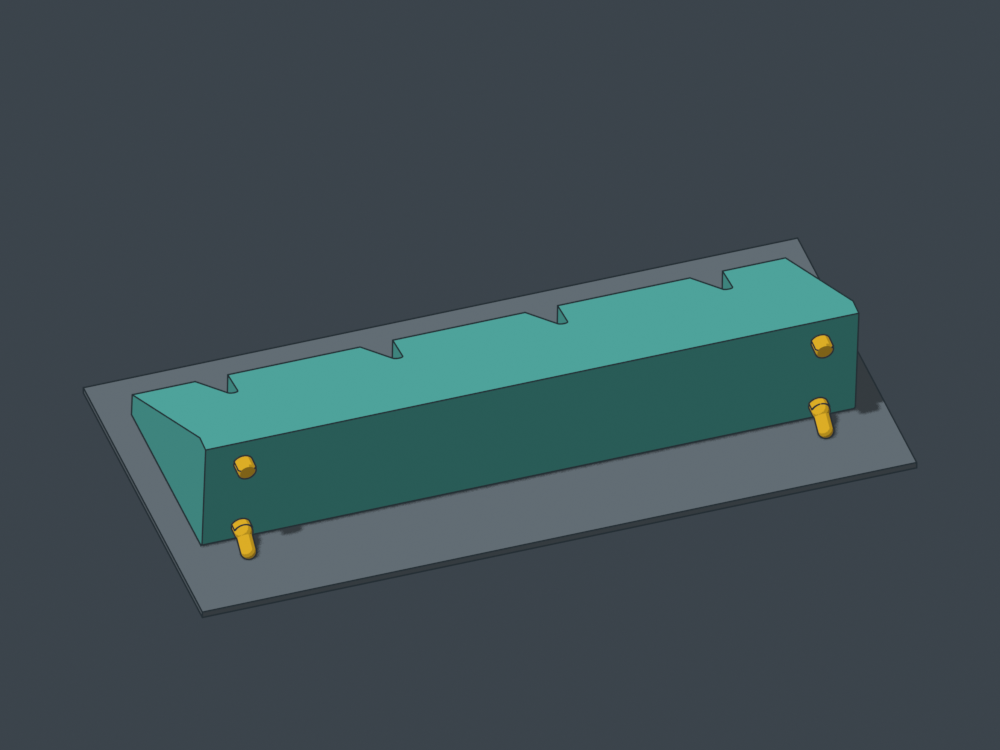
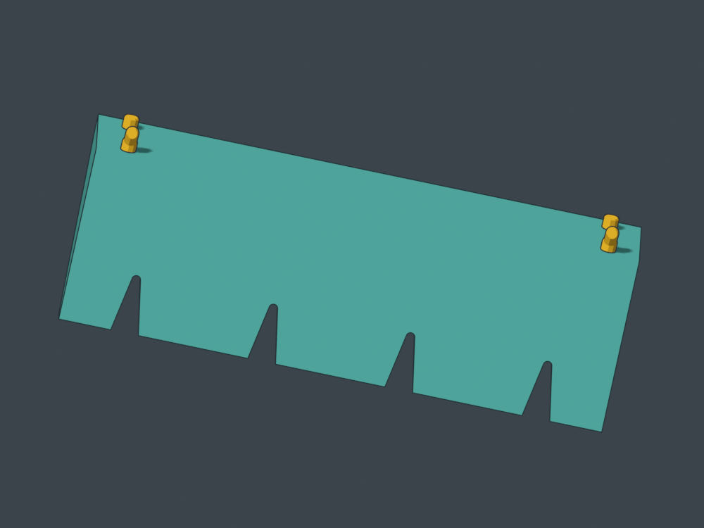
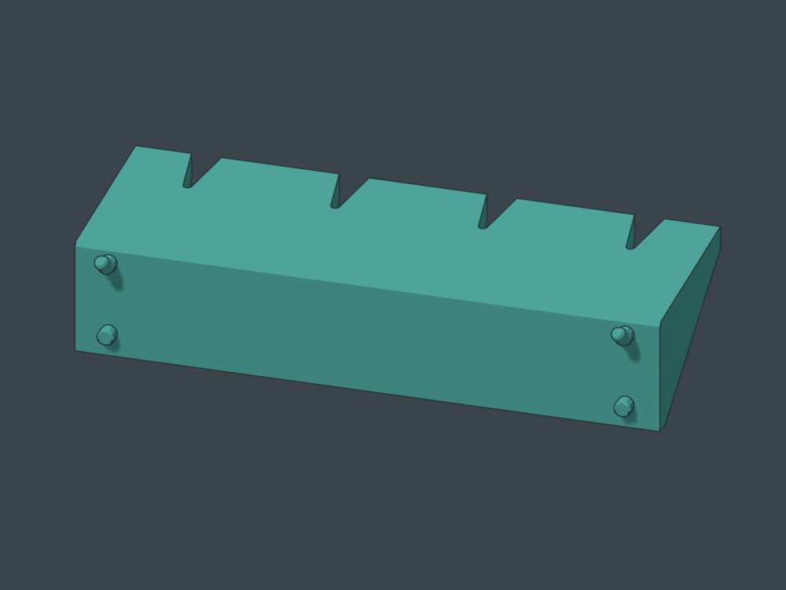

Locate the shaft. Keep the top flat.
Four seats for 1/4-inch bit-driver handles, across eight grid cells (201.2 mm). Continuous V slots seat 3-8 mm round shafts and 1/4-inch hex bits at different depths. The collar tip or shaft root rests on the flat top; the collar does not pass through.
The top slopes 5 degrees into the board, with no recessed seats. Each 20 degree V has an R1.55 mm rounded back for the nominal 3 mm minimum shaft, adding bearing behind its root. Its converging sides locate stems; the cant biases them rearward. Local peg supports are part of the print plan. CAD and nominal movement checked; not sliced or physically tested. The slope is a seating bias, not a positive lock.
 Only the bit or shaft enters. Collar tips and shaft roots bear on the planar top; collars stay above.
Only the bit or shaft enters. Collar tips and shaft roots bear on the planar top; collars stay above.
20 degree V slots with tangent R1.55 rounded backs: small stems sit deeper; larger stems sit farther forward. No handle recesses.
The front is higher: the flat top slopes 5 degrees down toward the board.
Top face on the bed. Hook-tip flats match that same plane; local peg supports are expected.
Three coplanar contacts: broad seat face plus both hook-tip flats.
Tighter canonical fit with a named sloped-tip print variant; flush receiving back.CAD downloads
Rotate the installed holder
Rotate the print pose
50.8 mm seat centers; 64.85 mm projection. A 1/4-inch hex bit measures 6.35 mm across flats and approximately 7.33 mm across corners. Rendered handles and collars are planning envelopes, used to check bearing and hand access rather than prescribe handle shape.